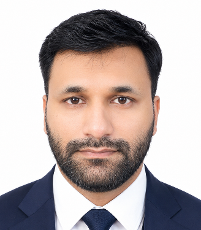

Nadeem
Shahzad Fida
Multidisciplinary professional with 8+ years of UAE experience across accounts, business operations, sales, customer service, data analysis and process improvement. I combine real-world finance knowledge with Computer Science studies, AI-assisted development and product thinking, including the creation of Triplem VIP, my proprietary accounting and money-management platform.
Professional Profile
I work naturally between finance and technology: organizing records, reconciling information, resolving operational problems, coordinating teams and improving repeated workflows. My earlier analytics and teaching experience strengthened structured reasoning and communication; my current development practice lets me translate business rules into practical digital systems while personally validating usability, data integrity and quality.
Professional Experience
Lead day-to-day operations across sales, vehicle maintenance, accounts, customer service and administration. Coordinate teams and priorities, support business growth, review financial and operational information, resolve bottlenecks and improve recurring workflows through reporting, digital tools and automation-minded process design.
Managed accounting and statutory records, customer accounts, balances, reconciliation, documentation and operational reporting; investigated discrepancies and used spreadsheets, databases and office systems to improve financial visibility, traceability and business support.
Collected, validated, interpreted and organized project data with emphasis on data quality, document control and efficient retrieval.
Delivered analysis-based projects within Customer Growth, converting raw customer information into reports, observations and decision-support material.
Designed lesson plans and explained mathematical concepts, developing strong presentation, communication and structured-reasoning skills.